Hi, I'm Jagdish Lamba.
5+ years of hands-on experience building and deploying advanced AI solutions for real-world impact.
Expert in LLMs, RAG, Computer Vision, NLP, and scalable GPU/Edge AI systems.
Proven track record leading end-to-end AI projects from research to production, leveraging the latest technologies to solve business-critical challenges.
About
"Delivering business value through cutting-edge AI: LLMs, RAG, Computer Vision, and Edge Intelligence."
I am a results-driven AI Engineer with 5+ years of experience architecting, developing, and deploying state-of-the-art solutions in Deep Learning, LLMs, RAG, Computer Vision, and NLP. My expertise spans the full AI lifecycle—from research and
prototyping to scalable production deployments on GPU clusters and edge devices.
I have led and contributed to high-impact projects including LLM-based summarization, enterprise RAG systems, and real-time vision/NLP inference on edge using Gstreamer, DeepStream and multi-GPU setups. I am passionate about leveraging the latest
advancements in AI to solve complex business problems, drive innovation, and deliver measurable results.
- Core Expertise: LLMs, RAG, Computer Vision, NLP, Deep Learning, Edge AI, Multi-GPU/Distributed Training, MLOps
- Frameworks & Tools: PyTorch, TensorFlow, HuggingFace, LangChain, DeepStream, MLFlow, Airflow, Flask, Django, CUDA
- Deployment: Cloud, On-premise GPU, Edge Devices (Jetson, Xavier, etc.), API & Web Integration
- Soft Skills: Project Leadership, Cross-functional Collaboration, Technical Mentoring, Agile Delivery
Experience
- Designed, fine-tuned, and deployed LLMs and RAG systems for enterprise-scale document understanding, summarization, and Q&A.
- Developed advanced NLP and semantic search pipelines using state-of-the-art transformer architectures and vector databases.
- Led multi-GPU and edge device deployments for real-time AI inference (vision and NLP) using DeepStream, Gstreamer and CUDA.
- Architected distributed training and inference workflows, maximizing GPU utilization and throughput for large-scale AI projects.
- Collaborated with cross-functional teams to deliver production-grade AI solutions, ensuring scalability, reliability, and measurable business impact.
- Mentored engineers and established best practices in MLOps, model monitoring, and continuous delivery for AI/ML systems.
- Key Tools & Libraries: PyTorch, TensorFlow, HuggingFace Transformers, LangChain, DeepStream,, FAISS, MLFlow, Airflow, Ollama
- Hardware: Multi-GPU (Tesla V100, A100), NVIDIA Jetson Edge Devices
- OS: Windows, Linux
Projects
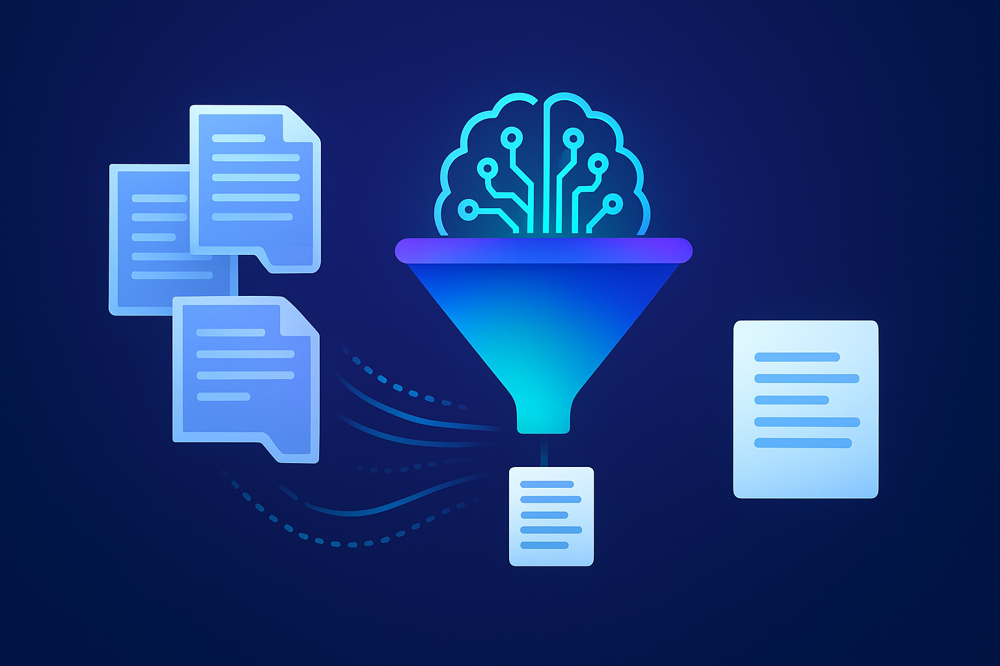
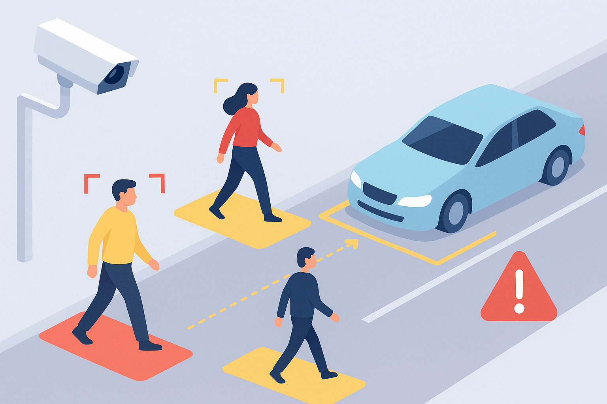
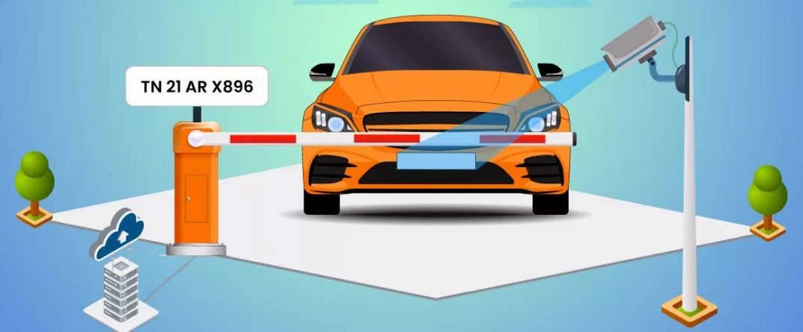

Skills
Computer Vision
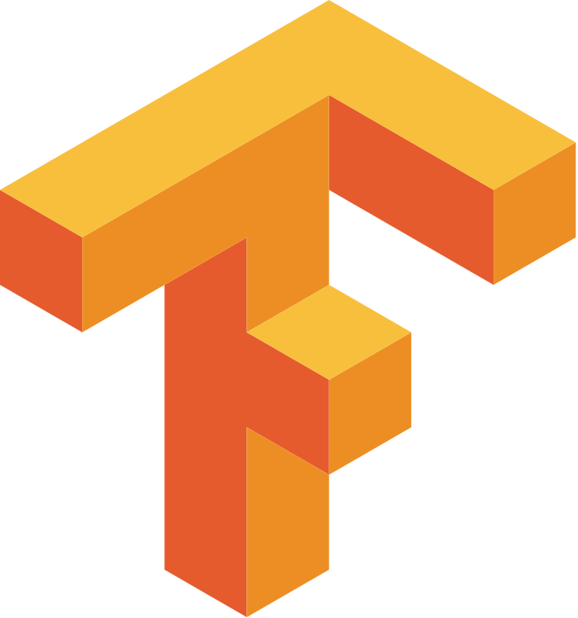
TensorFlow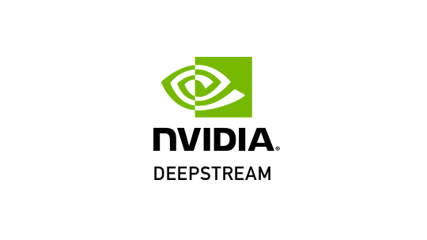
DeepStream Gstreamer
Gstreamer
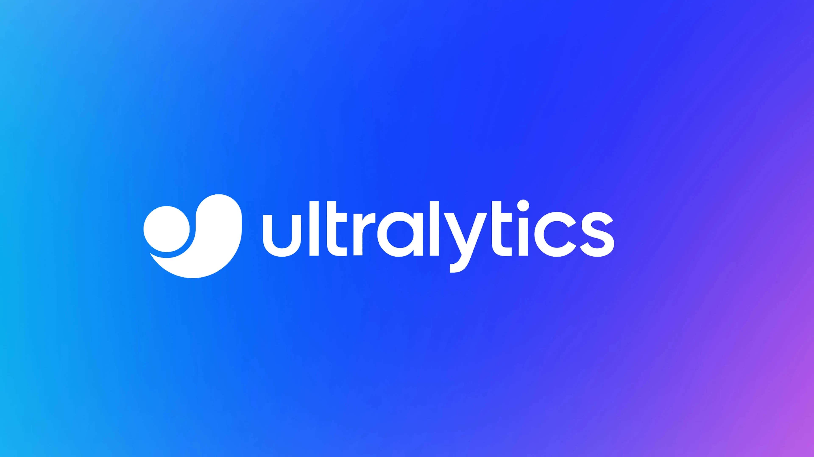
YOLONatural Language Processing (NLP)
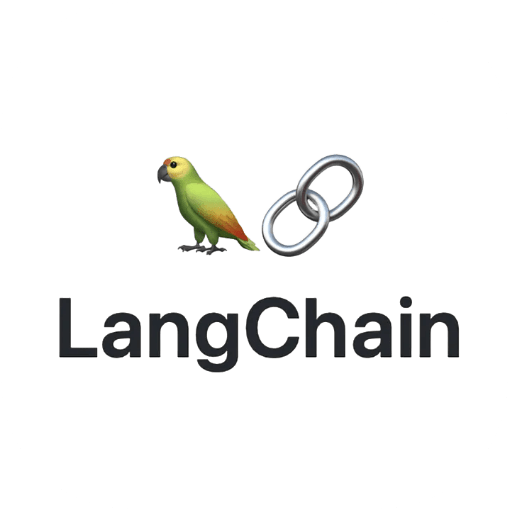
LangChain Ollama
Ollama
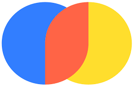
Chromadb NLTK
NLTK
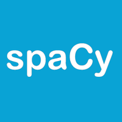
SpaCyMiscellaneous
 Git
Git
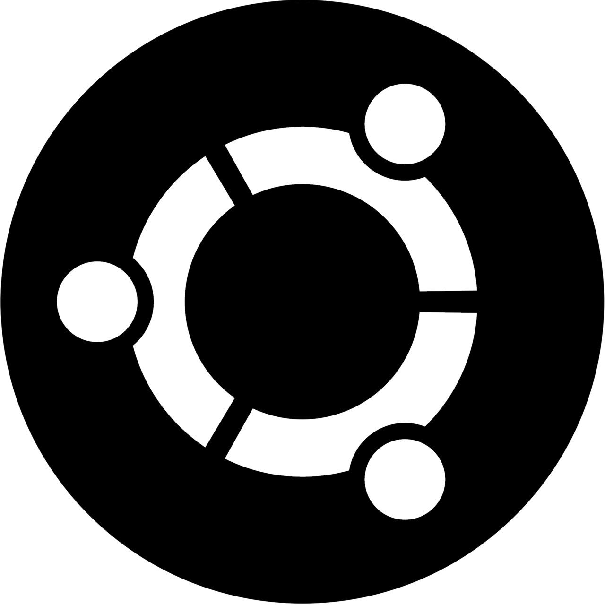
Linux VS Code
VS Code
 Next.js
Next.js
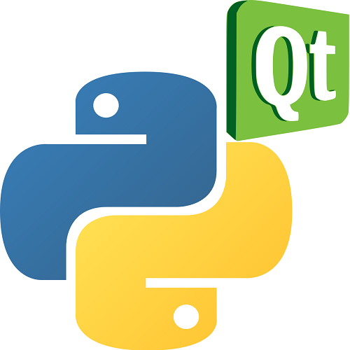
PyQt5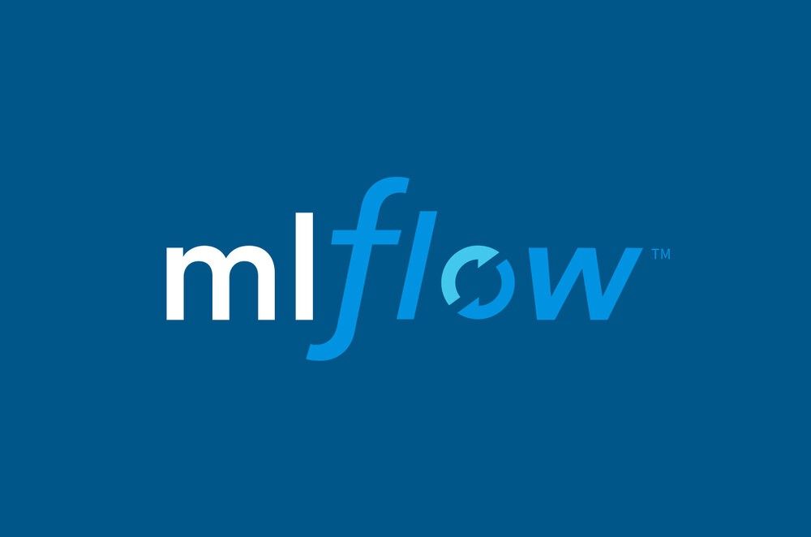
MLFlow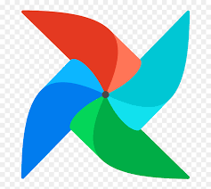
Airflow Django
Django
 FastAPI
FastAPI
Certificates
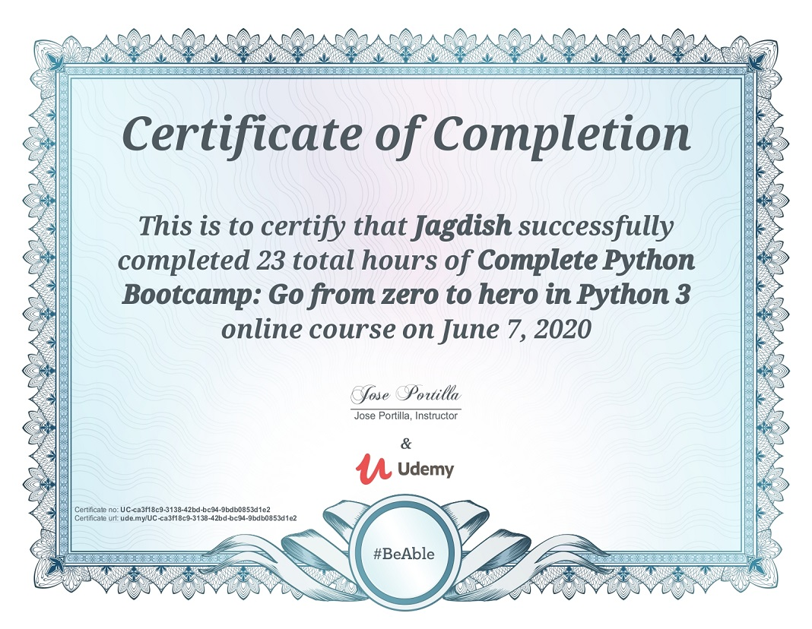
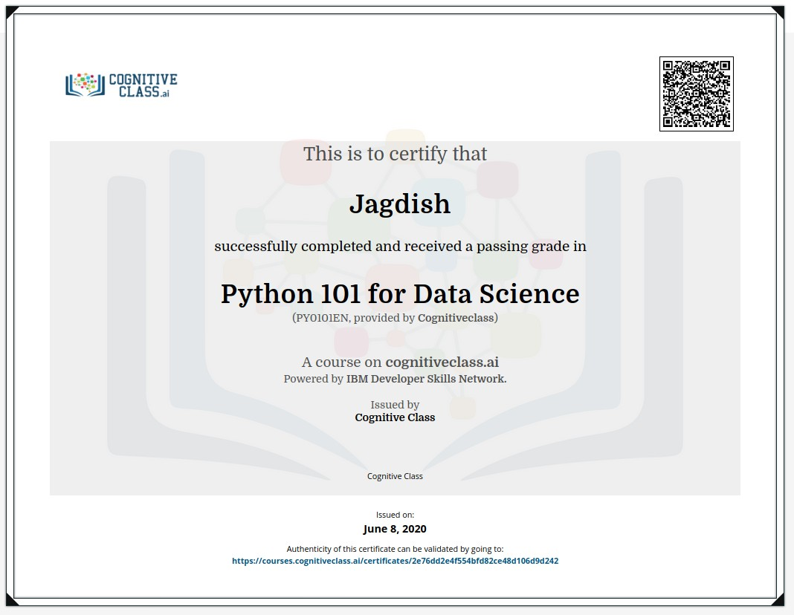
Education
Indian Institue of Inforamtion Technology
Dharwad
Degree: Master of Technology in Data Science & Artificial Intelligence
Grading: Persuing
- Gen AI
- Speech and NLP
- LLM
Relevant Courseworks:
Liverpool John Moores University
Liverpool, UK
Degree: Master of Science in Artificial Intelligence and Machine Learning
Grading: Merit
- Advance AI
- End to end Project Development
- Foundations of Algorithms
- Thesis Project on AI and Deep Learning
Relevant Courseworks:
International Institute of Information Technology
Bangalore, India
Degree: Exclusive Post Graduate Programme in Artificial Intelligence and Machine Learning (14 Months)
CGPA: 3.74/4
- Advance Python & EDA
- Machine Learning
- Deep Learning
- Advance NLP
- Computer Vision
- MLOps
Relevant Courseworks: